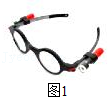
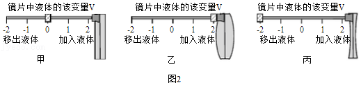
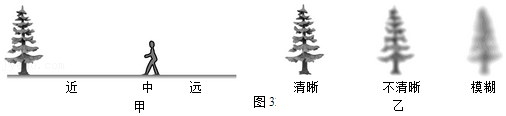
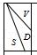

2016年北京市中考物理试题 · 科普阅读 第40题
40．（4分）阅读《可调式眼镜》回答下题。
可调式眼镜
人的眼睛看清物体是通过改变晶状体的形状来实现的，晶状体相当于全自动变焦镜头。看近处物体时，晶状体变凸一些，折射光线的能力变强；看远处物体时，晶状体变扁平一些，折射光线的能力变弱。通过这样的调节，使远近不同的物体均能在视网膜上成像。
若晶状体调节能力变弱，就会出现看不清远处物体或近处物体的情况，需要佩戴合适的眼镜进行矫正。

有人发明了一种能矫正视力的可调式眼镜，如图1所示，这种眼镜的镜片中含有一种特殊液体。图2是可调式眼镜的结构示意图，镜架上有表示移出和加入液体含量的标尺；移动标尺上的滑块可以定量改变镜片中的液体含量，从而改变镜片的形状；镜片中液体含量的改变量V可以用滑块在标尺上的位置表示。滑块位于标尺上0刻度线处，表示眼镜的初始状态，此时，镜片的形状是扁平的，如图2甲所示。当滑块位于标尺上1、2刻度线处时，分别表示镜片中加入一些液体、加满液体，图2乙是镜片中加满液体的示意图。当滑块位于标尺上﹣1、﹣2刻度线处时，分别表示从镜片中移出一些液体、移出全部液体，图2丙是镜片中移出全部液体的示意图。

为探究可调式眼镜的矫正效果，首先要确定以下程序和标准：
选定同一棵树作为观察对象，选定远、中、近三个观察位置，用S表示观察位置到树的距离，如图3甲所示；用D表示看到树的清晰程度，清晰程度分为清晰、不清晰、模糊三个等级，如图3乙所示。

小京和小贝视力不同，没有佩戴眼镜时，小京在近处看树“清晰”，在远处看树“不清晰”；小贝在远处看树“清晰”，但在近处看树“不清晰”。
小京和小贝佩戴眼镜后，进行实验的主要步骤如下：
①调节镜片中的液体处于初始状态。
②选择不同观察位置，观察树，将观察结果记录在表格中。
③改变镜片中液体的含量，重复步骤②。
小京和小贝的实验结果记录表（部分数据）分别如表一、表二所示：
表一小京的实验结果记录表
 | ﹣2 | ﹣1 | 0 | 1 | 2 |
近 | | 清晰 | 清晰 | 清晰 | |
中 | | 清晰 | 清晰 | | |
远 | | 清晰 | 不清晰 | 模糊 | |
表二小贝的实验结果记录表
通过实验及对实验结果的分析，两位同学对可调式眼镜有了新的认识。
请根据上述材料，回答下列问题：（选填选项前的字母）
（1）调节眼睛晶状体形状的作用是帮助我们看清 。（只有一个选项正确）
A．不同亮度的物体 B．不同颜色的物体
C．不同距离的物体 D．不同大小的物体
（2）为了使小京在远、中、近处看树都“清晰”，调节镜片内液体含量的措施是 。（只有一个选项正确）
A．加满液体 B．加入一些液体 C．移出一些液体 D．移出全部液体
（3）为了使小贝在近处看树“清晰”，调节镜片内液体含量的措施是 。（至少有一个选项正确）
A．加满液体 B．加入一些液体 C．移出一些液体 D．移出全部液体。